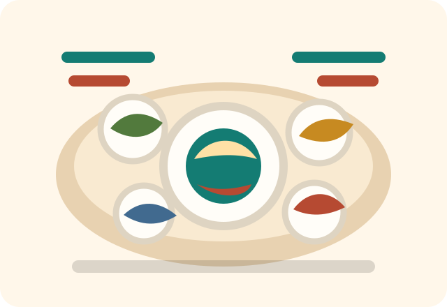

9:41
▮▮▮ Wi-Fi ▰
☰
今晚食咩好？
抽一份屋企人今晚會想食的一餸一菜。
今日

今晚餐單
未抽餐
按下按鈕，抽一個主菜加一個青菜。
抽今晚餐單
一餸一菜
快煮一餸一菜
重新抽
記低今晚
Menu
家煮菜單
Custom
加新菜
主菜
青菜
快煮
加入
History
最近煮過
×
Settings
抽餐偏好
避開最近三晚
今晚偏向快煮
複製今晚餐單
●
今晚
▦
菜單
✓
紀錄